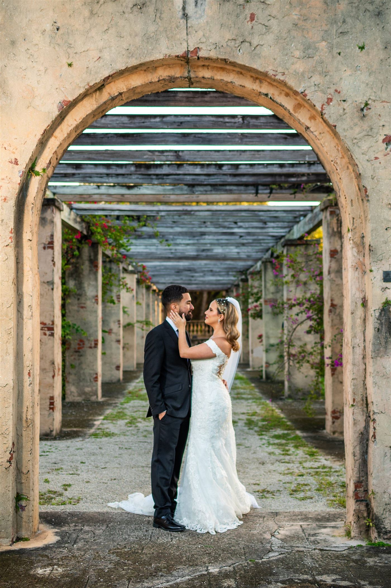
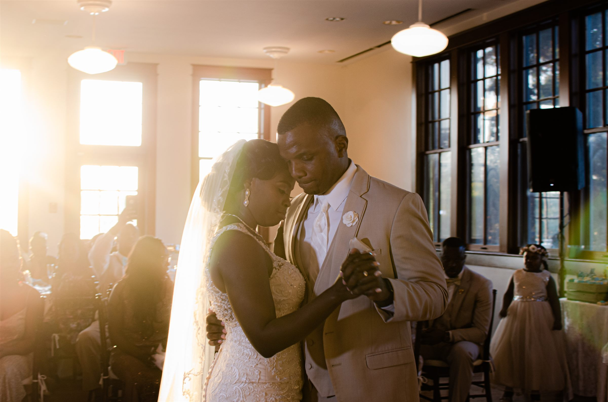
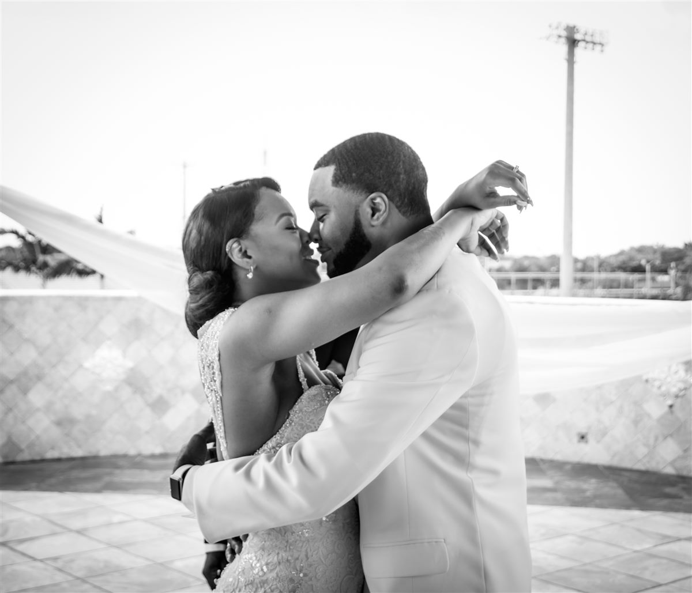
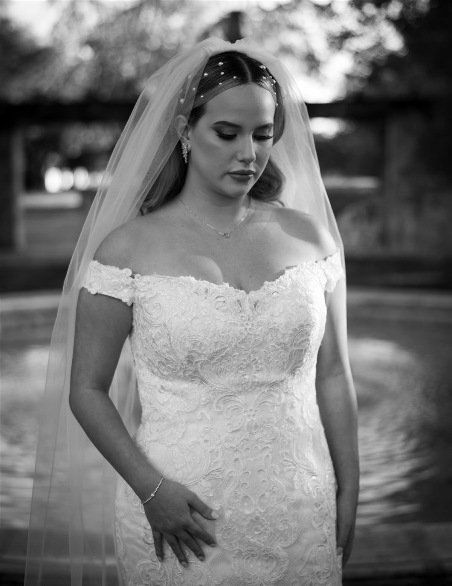
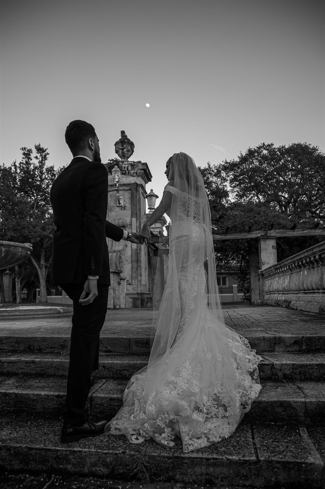
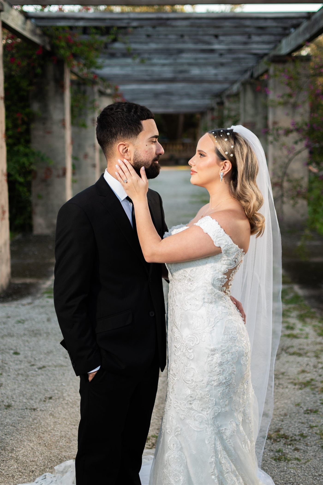
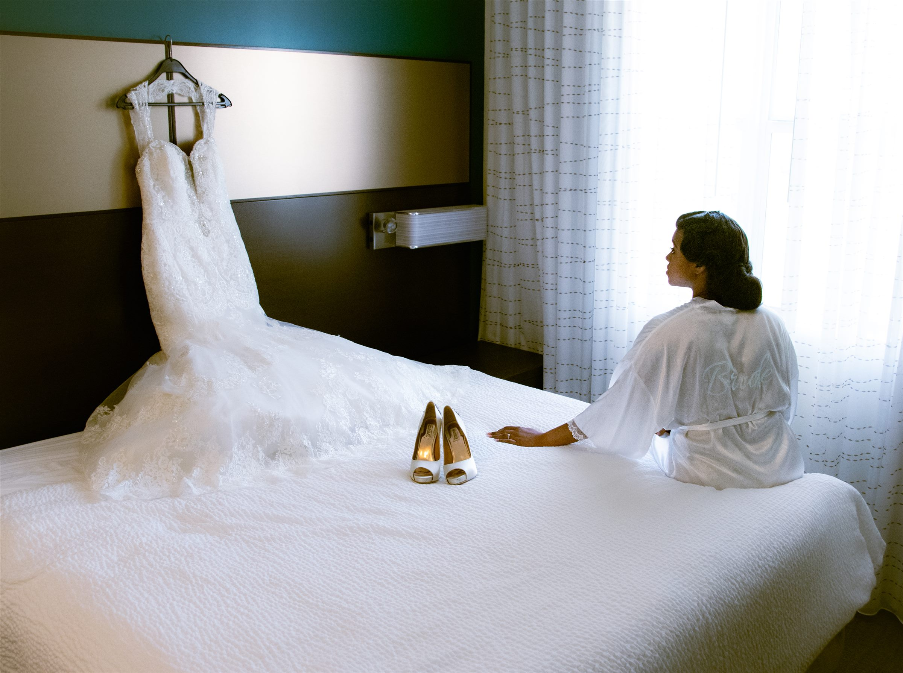
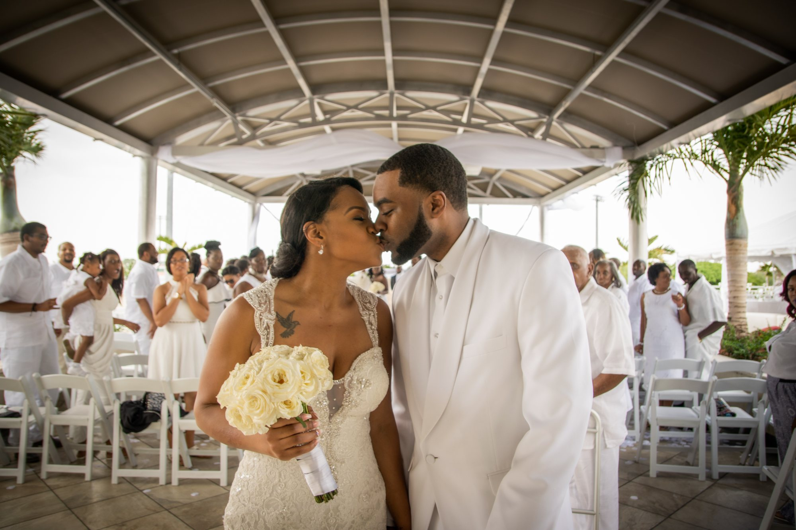
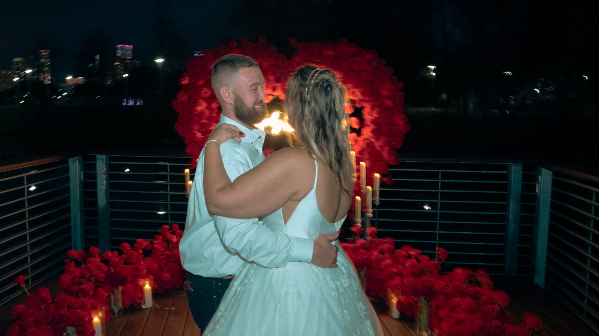

Weddings
The whole day, beginning to last dance — documented like a film and bound like a magazine.
Wedding & Engagement Photography · Austin, Texas
We photograph the way it felt — not merely the way it looked.
Quiet, unhurried, and deeply human. Reinaldo J. Ramirez builds each wedding like a magazine feature — composed with intention, lit like cinema, and edited with restraint. The result is an heirloom, not a highlight reel.







Photography and film, made with the same restraint. Choose one, or let the day be told in both stills and motion.
The whole day, beginning to last dance — documented like a film and bound like a magazine.
An unhurried afternoon, just the two of you. The session that becomes your invitation suite.
The day in motion — vows, first dances, and the quiet in-betweens, cut into a cinematic short you'll return to for years.


El amor merece ser arte.
Love deserves to be art
Reinaldo is a Venezuelan artist living in Austin — raised on film, restless about music, forever chasing the kind of light you find in old photographs. He shoots like a documentarian and edits like a painter.
Fewer, better weddings each year — so every couple is photographed with full attention and no rush.
Austin is home, but the camera travels. A few of the places I'll already be next year — say the word and I'll meet you anywhere in the world.
"Looking at a leaf, you miss the tree. Looking at a tree, you'll miss the forest."
REINALDO J. RAMIREZ · ON PHOTOGRAPHING THE WHOLE STORY
A decade behind the lens
Tell us a little about the two of you and the day you're dreaming of. Reinaldo takes a limited number of weddings each year — the earlier you reach out, the better.